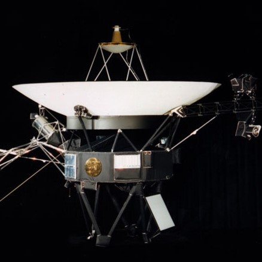
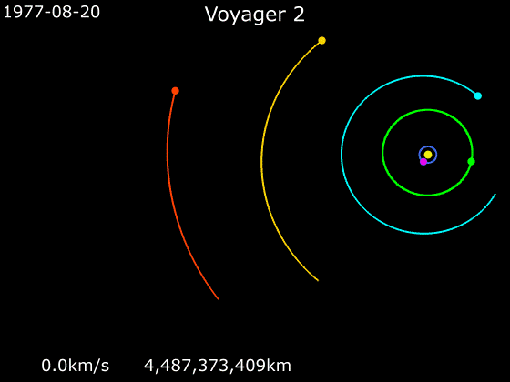
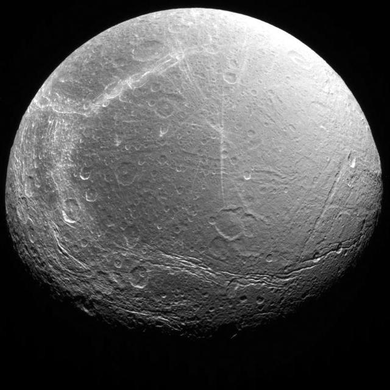

Source: NASA.
Voyager 2
Time since launch:
Voyager 2
Voyager 2 is a space probe that was launced in , with a main goal of studying the outer planets of the Solar System, and deep outer Space. The space probe as now been operating for but most of the probe's systems aren't in operation due to power constraints.
The Grand Tour program was a program devised by NASA in which space probes visit every planet in the outer Solar System, and this was replaced by Voyager 1 and Voyager 2 launches.[1]. The launch window to visit these planets only occurs once every ![4] Below is a GIF of Voyager 2's trajectory and how it managed to reach the outer planets in the Solar System.

The planets in order from the center to outermost: Earth, Jupiter, Saturn, Uranus, Neptune
Each planet is orbiting the Sun, and the pink line shows the Voyager 2 spacecraft
(Source: Phoenix7777)[2]
Voyager Statistics
Below is a table with some statistics about both Voyager missions. You can hover over any cell in the table to get some additional information![3]
| Voyager 1 | Voyager 2 | |
|---|---|---|
| Launch Time (UTC) | ||
| Jupiter encounter | ||
| Saturn encounter | ||
| Uranus encounter | N/A | |
| Neptune encounter | N/A |
Where is Voyager 2 now?
Voyager 2, currently, is in interstellar space, and the main objective of the mission has changed from investigating the outer Solar System to interstellar space. Some of its instruments have been disabled in order to conserve energy - they don't have solar panels because they are so far away from the Sun that they would never work! [4]

References
- National Aeronautics and Space Administration, Jet Propulsion Laboratory, and California Institute of Technology Planetary Voyage. [Online]. 2022. [Accessed 3 March 2022]. Available from: https://voyager.jpl.nasa.gov/mission/science/planetary-voyage/
- Phoenix7777. Animation of Voyager 2 Trajectory. [Animated GIF]. 2020. [Accessed 4 March 2022]. Available from: https://commons.wikimedia.org/wiki/File:Animation_of_Voyager_2_trajectory.gif
- National Aeronautics and Space Administration, Jet Propulsion Laboratory, and California Institute of Technology Voyager Timeline. [Online]. 2022. [Accessed 3 March 2022]. Available from: https://voyager.jpl.nasa.gov/mission/timeline/
- National Aeronautics and Space Administration, Jet Propulsion Laboratory, and California Institute of Technology Fact Sheet. [Online]. 2022. [Accessed 4 March 2022]. Available from: https://voyager.jpl.nasa.gov/frequently-asked-questions/fact-sheet/